생산자동화산업기사 (2012-05-20 기출문제)
1과목: 기계가공법 및 안전관리
1. 밀링 머신의 주축베어링 윤활방법으로 가장 적합하지 않은 것은?
- 그리스 윤활
- 오일 미스트 윤활
- 강제식 윤활
- 패드 윤활
(정답률: 66%)

2. 주철을 드릴로 가공할 때 드릴 날끝의 여유각은 몇 도(°)가 적합한가?
- 10° 이하
- 12° ~ 15°
- 20° ~ 32°
- 32° 이상
(정답률: 83%)
3. 브로칭(broaching)에 관한 설명 중 틀린 것은?
- 제작과 설계에 시간이 소요되며 공구의 값이 고가이다.
- 각 제품에 따라 브로치의 제작이 불편하다.
- 키 홈, 스플라인 홈 등을 가공하는데 사용한다.
- 브로치 압입방법에는 나사식, 기어식, 공압식이 있다.
(정답률: 50%)
4. 절삭공구인선의 파손원인 중 절삭공구의 측면과 피삭재의 가공면과의 마찰에 의하여 발생하는 것은?
- 크레이터 마모
- 플랭크 마모
- 치핑
- 백래시
(정답률: 70%)
5. 마이크로미터의 스핀들 나사의 피치가 0.5㎜이고 딤블의 원주눈금이 50등분 되어 있다면 최소 측정값은?
- 2㎛
- 5㎛
- 10㎛
- 15㎛
(정답률: 81%)
6. 연삭숫돌의 표시에서 WA 60K m V 1호 2⑤ × 19 × 15.88로 명기되어 있다. K는 무엇을 나타내는 부호인가?
- 입자
- 결합제
- 결합도
- 입도
(정답률: 68%)
7. 분할대를 이용하여 원주를 18등분하고자 한다. 신시내티형(Cincinnati type) 54구멍 분할판을 사용하여 단식분할하려면 어떻게 하는가?
- 2회전하고, 2구멍씩 회전시킨다.
- 2회전하고, 4구멍씩 회전시킨다.
- 2회전하고, 8구멍씩 회전시킨다.
- 2회전하고, 12구멍씩 회전시킨다.
(정답률: 52%)
8. 다음 중 가공물을 절삭할 때 발생되는 칩의 형태에 미치는 영향이 가장 적은 것은?
- 절삭깊이
- 공작물의 재질
- 절삭공구의 형상
- 윤활유
(정답률: 78%)
9. 다음 중 각도측정기가 아닌 것은?
- 사인바
- 옵티컬플랫
- 오토 콜리메이터
- 탄젠트바
(정답률: 72%)
10. 선반에서 지름 50㎜의 재료를 절삭속도 60m/min, 이송 0.2㎜/ver, 길이 30㎜로 1회 가공할 때 필요한 시간은?
- 약 10초
- 약 18초
- 약 23초
- 약 39초
(정답률: 55%)
11. 래핑(lapping)작업에 관한 사항 중 틀린 것은?
- 경질 합금을 래핑할 때는 다이아몬드로 해서는 안된다.
- 래핑유(lap-oil)로는 석유를 사용해서는 안된다.
- 강철을 래핑할 때는 주철이 널리 사용된다.
- 랩 재료는 반드시 공작물보다 연질의 것을 사용한다.
(정답률: 62%)
12. 퓨즈가 끊어져서 다시 끼웠을 때 또다시 끊어졌을 경우의 조치사항으로 가장 적합한 것은?
- 다시 한 번 끼워본다.
- 조금 더 용량이 큰 퓨즈를 끼운다.
- 합선 여부를 검사한다.
- 굵은 동선으로 바꾸어 끼운다.
(정답률: 84%)
13. 다음 연삭가공 중 강성이 크고, 강력한 연삭기가 개발됨으로 한번에 연삭 깊이를 크게 하여 가공능률을 향상시킨 것은?
- 자기 연삭
- 성형 연삭
- 그립 피드 연삭
- 경면 연삭
(정답률: 76%)
14. 마이크로미터의 사용시 일반적인 주의사항이 아닌것은?
- 측정시 래칫 스톱은 1회전 반 또는 2회전 돌려 측정력을 가한다.
- 눈금을 읽을 때는 기선의 수직위치에서 읽는다.
- 사용 후에는 각 부분을 깨끗이 닦아 진동이 없고 직사광선을 잘 받는 곳에 보관하여야 한다.
- 대형 외측마이크로미터는 실제로 측정하는 자세로 0점 조정을 한다.
(정답률: 82%)
15. 공작기계작업에서 절삭제의 역할에 대한 설명으로 옳지 않은 것은?
- 절삭공구와 칩 사이의 마찰을 감소시킨다.
- 절삭시 열을 감소시켜 공구수명을 연장시킨다.
- 구성인선의 발생을 촉진시킨다.
- 가공면의 표면거칠기를 향상시킨다.
(정답률: 69%)
16. 드릴링머신으로 구멍 뚫기 작업을 할 때 주의해야 할 사항이다. 틀린 것은?
- 드릴은 흔들리지 않게 정확하게 고정해야 한다.
- 장갑을 끼고 작업을 하지 않는다.
- 구멍 뚫기가 끝날 무렵은 이송을 천천히 한다.
- 드릴이나 드릴 소켓 등을 뽑을 때에는 해머 등으로 두들겨 뽑는다.
(정답률: 87%)
17. NC기계의 움직임을 전기적인 신호로 표시하는 회전 피드백 장치는 무엇인가?
- 리졸버(resolver)
- 서보 모터(servo moter)
- 컨트롤러(controller)
- 지령 테이프(NC tape)
(정답률: 71%)
18. 다음 중 수평밀링머신의 긴 아버(long arber)를 사용하는 절삭공구가 아닌 것은?
- 플레인 커터
- T홈 커터
- 앵귤러 커터
- 사이드 밀링커터
(정답률: 63%)
19. KSB에 규정된 표면거칠기 표시방법이 아닌 것은?
- 산술평균 거칠기(Ra)
- 최대높이(Ry)
- 10점 평균 거칠기(Rz)
- 제곱 평균 거칠기(Ra)
(정답률: 74%)
20. 표준 맨드릴(mandrel)의 테이퍼 값으로 적합한 것은?
- 1/50 ~ 1/100 정도
- 1/100 ~ 1/1000 정도
- 1/200 ~ 1/400 정도
- 1/10 ~ 1/20 정도
(정답률: 81%)
2과목: 기계제도 및 기초공학
21. 다음 중 합금 공구강 강재에 해당하지 않는 재료 기호는?
- STS
- STF
- STD
- STC
(정답률: 53%)
22. 도면에서 가는 실선으로 표시된 대각선 부분의 의미는?
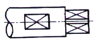
- 흠부분
- 곡면
- 평면
- 라운드 부분
(정답률: 85%)
23. 그림과 같은 제3각 정투상도의 입체도로 적합한 것은?
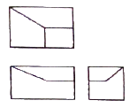
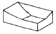
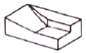
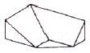
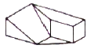
(정답률: 85%)
24. 다음 중 H7 구멍과 가장 헐겁게 끼워지는 축의 공차는?
- f6
- h6
- k6
- g6
(정답률: 67%)
25. 테이퍼 핀의 호칭 치수는 다음 중 어느 것인가?
- 굵은 쪽의 지름
- 가는 쪽의 지름
- 중앙부의 지름
- 테이퍼 핀 구멍의 지름
(정답률: 50%)
26. 다음 중 억지 끼워맞춤에 해당하는 것은?
- H7/k6
- H7/m6
- H7/n6
- H7/p6
(정답률: 81%)
27. 다음 중 도면이 갖추어야 할 요건으로 타당하지 않는 것은?
- 도면에 그려진 투상이 너무 작아 애매하게 해석될 경우에는 아예 그리지 않는다.
- 도면에 담겨진 정보는 간결하고 확실하게 이해할 수 있도록 표시한다.
- 도면은 충분한 내용과 양식을 갖추어야 한다.
- 도면에는 제품의 거칠기 상태, 재질, 가공방법 등의 정보도 포함하고 있어야 한다.
(정답률: 84%)
28. 다음 중 다이캐스팅용 알루미늄합금에 해당하는 기호는?
- WM 1
- ALDC 1
- BC 1
- ZDC 1
(정답률: 87%)
29. 다음 중 가공에 의한 줄무늬 방향 기호화 그 의미가 맞지 않는 것은?
- M : 가공에 의한 컷의 줄무늬가 여러 방향으로 교차 또는 무방향
- X : 가공에 의한 컷의 줄무늬가 기호를 기입한 면의 중심에 대하여 거의 방사 모양
- C : 가공에 의한 컷의 줄무늬가 기호를 기입한 면의 중심에 대하여 거의 동심원 모양
- P : 줄무늬 방향이 특별하며 방향이 없거나 돌출(돌기가 있는) 할 때
(정답률: 61%)
30. 도면에서 2종류 이상의 선이 같은 장소에 겹치게 될 경우에 선 중에서 순위가 가장 낮은 것은?
- 중심선
- 숨은선
- 치수 보조선
- 절단선
(정답률: 75%)
31. 42.195km의 거리를 3시간에 달리는 마라톤 선수의 평균속도는 몇 m/s 인가?
- 3
- 11.7
- 5.9
- 3.9
(정답률: 69%)
32. 어떤 물체를 8N의 힘을 가하여 힘의 방향으로 10m를 이동시켰다. 행한 일은?
- 0.08 N/m
- 0.8 N/m
- 80 N ㆍ m
- 800 N ㆍ m
(정답률: 83%)
33. 전선의 직경이 동일한 조건에서 길이가 길면 저항값은 어떻게 변하는가?
- 커진다.
- 작아진다.
- 커지다가 작아진다.
- 변함이 없다.
(정답률: 76%)
34. 다음 중 유량을 나타내는 식으로 옳은 것은? (단, Q : 유량, P : 압력, A : 관의 단면적, V : 유체의 속도이다.)
- Q = P × A
- Q = P × V
- Q = A × V
- Q = A / P
(정답률: 67%)
35. 다음 중 저항의 직렬접속을 설명한 것으로 틀린것은?
- 각 저항에는 같은 전원 전압이 걸린다.
- 회로의 저항 값은 각 저항의 합계와 같다.
- 회로 안의 각 저항에는 같은 크기의 전류가 흐른다.
- 각 저항에 걸리는 전압의 합계는 전원 전압과 같다.
(정답률: 60%)
36. 아래 그림과 같이 받침점으로부터 420mm 떨어진 곳에 80kgf 인 물체 W1을 놓으면 받침점에서 840mm 떨어진 곳에 중량이 얼마인 물체 W2를 놓아야 평형이 유지되는가?
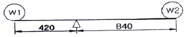
- 420kgf
- 160kgf
- 80kgf
- 40kgf
(정답률: 72%)
37. "두 물질이 화합물로 변하는 경우 반응 전 두 물질의 질량 합과 화합물의 질량은 항상 보존 된다.“는 법칙은?
- 질량보존의 법칙
- 뉴튼의 운동법칙
- 관성의 법칙
- 작용과 반작용의 법칙
(정답률: 91%)
38. 그림과 같이 1000 kgf의 전단력이 직경 20mm의 볼트에 작용하고 있다. 이 때, 볼트에 생기는 전단응력은 약 얼마인가?
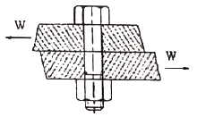
- 3.18 kgf/mm2
- 6.37 kgf/mm2
- 31.8 kgf/mm2
- 63.7 kgf/mm2
(정답률: 64%)
39. 다음 중 동력의 단위로 알맞은 것은?
- W
- N
- N ㆍ m
- N/m2
(정답률: 65%)
40. 다음 중 1라디안(rad)을 60분법으로 환산하여 바르게 나타낸 것은?
- 360° / π
- 270° / π
- 180° / π
- 90° / π
(정답률: 72%)
3과목: 자동제어
41. 실린더 내부의 오일이 유출되는 방향으로 유량제어 밸브를 설치하여 전ㆍ후진 속도조절이 가능한 속도제어 회로는?
- 미터인 회로
- 미터 아웃 회로
- 블리드 오프 회로
- 디플렌션 회로
(정답률: 69%)
42. 다음 그림과 같은 회로에서 입력전류에 대한 출력전압의 전달함수는? (단, s : 라플라스연산자이다.)
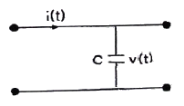
- Cs
- 1 / Cs
- C / 1+sT
- C
(정답률: 67%)
43. 유압제어의 특징을 설명한 것으로 틀린 것은?
- 작은 장치로 큰 출력을 얻을 수 있다.
- 전기, 전자의 조합으로 자동제어 가능하다.
- 무단변속이 불가능하다.
- 인력에 대한 출력 응답이 빠르다.
(정답률: 78%)
44. 공기 압축기에서 왕복 피스톤 압축기의 분류에 속하는 것은?
- 미끄럼 날개 회전압축기
- 축류 압축기
- 루트 블로어
- 격판 압축기
(정답률: 60%)
45. 목표값 400℃의 전기로에서 열전온도계의 지시에 따라 전압조정기로 전압을 조절하여 온도를 일정하게 유지시키고 있다. 이 때 온도는 어느 것에 해당되는 가?
- 검출부
- 조작부
- 제어량
- 조작량
(정답률: 68%)
46. PLC 구성시 입력기기에 해당되지 않는 것은?
- 푸시버튼 스위치
- 검출용 스위치 및 센서
- 명령용 조작 스위치
- 히터
(정답률: 87%)
47. 속응성의 정도를 수량으로 표시하는 것은?
- 정확도
- 정밀도
- 시정수
- 오차
(정답률: 83%)
48. PLC와 주변기기의 통신 방식 중 송신과 수신에 같은 회선을 사용하므로 반이중 방식으로만 통신이 가능한 것은?
- RS-232
- RS-422
- RS-485
- EhterNet
(정답률: 53%)
49. 과도응답의 소멸되는 정도를 나타내는 감쇠비는?
- 최대오버슈트/ 제2오버슈트
- 제3오버슈트 / 제2오버슈트
- 제2오버슈트 / 최대오버슈트
- 제2오버슈트 / 제3오버슈트
(정답률: 69%)
50. 아래 그림과 같은 타임차트 형태로 동작하는 타이머의 명칭은?
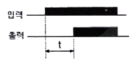
- 적산 타이머
- 감산 타이머
- 온 딜레이 타이머
- 오프 딜레이 타이머
(정답률: 80%)
51. 다음 중 엔코더를 이용해서 검출하기 어려운 것은?
- 기계장치의 이송거리 검출
- 모터의 회전부하 검출
- 모터의 회전속도 검출
- 모터의 회전방향 검출
(정답률: 68%)
52. 다음 중 자동조정에 속하지 않는 제어량은?
- 전류
- 방위
- 주파수
- 전압
(정답률: 79%)
53. f(t)=e-at의 라플라스 변환은?
- 1 / s - a
- 1 / s + a
- 1 / (s – a)2
- 1 / (s + a)2
(정답률: 52%)
54. s-평면에서 특성방정식의 근이 허수축 상에 복소수근으로 존재할 때 계단 응답의 형태는?
- 수렴
- 발산
- 지속진동
- 무응답
(정답률: 49%)
55. 다음 중 1차 지연요소의 전달함수는? (단, K : 이득상수, T : 시정수, s : 라플라스연산자)
- K/(1+sT)
- K/(1+sT1+s2T2)
- LS
- 1+Ls+Ks2
(정답률: 84%)
56. 제어량을 어떤 일정한 목표 값으로 유지하는 것을 목적으로 하는 제어를 무엇이라 하는가?
- 정치제어
- 프로그램제어
- 조건제어
- 순서제어
(정답률: 56%)
57. 주파수 전달 함수가 G(jω) = 1 + j 일 때 보드 선도의 위상은?
- 0°
- 45°
- 90°
- 180°
(정답률: 66%)
58. 서보기구의 제어량에 해당되지 않는 것은?
- 위치
- 방위
- 중량
- 자세
(정답률: 80%)
59. 2차 지연요소 전달함수
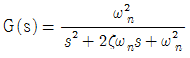
의 감쇠계수(ζ)에 대한 설명중 옳은 것은?- ζ ＞ 1 인 경우는 부족제동이다.
- ζ = 1 인 경우는 임계제동이다.
- ζ ＜ 1 인 경우는 과제동이다.
- ζ ≠ 0 인 경우는 무제동이다.
(정답률: 65%)
60. 공압기기에서 윤활기는 어느 원리를 이용한 것인가?
- 벤투리(Venturi) 원리
- 보일(Boyle)의 법칙
- 파스칼(Pascal)의 원리
- 후크(Hooke)의 법칙
(정답률: 65%)
4과목: 메카트로닉스
61. 온도센서로 이용되지 않는 것은?
- 금속
- Cds
- 서미스터
- 열전쌍
(정답률: 70%)
62. 절대형(absolute type) 로터리 인코더의 설명 중 잘못된 것은?
- 잡음에 강하고 읽는 오차가 누적되지 않는다.
- 전원을 끊어도 정보가 없어지지 않으며 재복귀가 가능하다.
- 회전방향 변경에 대한 방향 판별 회로가 필요하다.
- 임의의 점을 영점으로 하기 위해서는 연산이 필요하다.
(정답률: 53%)
63. 산업용 로봇에서 서보 레디(servo ready)란 무엇인가?
- 정의된 위치 데이터를 키보드로 직접 입력하는 것
- 컨트롤러에서 이상 유무를 확인하여 신호를 발생시키는 것
- 전원 공급 후 컨트롤러가 이상 유무를 확인하기 전에 드라이버 측에서 컨트롤러로 보내는 준비 신호
- 아날로그 타입에서 드라이버로 출력하는 속도 명령어 신호
(정답률: 84%)
64. 연산증폭기에서 출력 오프셋 전압의 측정조건은?
- 입력단자 개방
- 입력단자 접지
- 입력단자 단락
- 출력단자 개방
(정답률: 55%)
65. 인코더에서 입력선의 숫자가 64개라면 출력선의 숫자는 얼마인가?
- 3
- 4
- 5
- 6
(정답률: 69%)
66. 다음 그림은 밀링작업에서 상향절삭(up cutting) 방식이다. 하향절삭(down cutting)과 비교하여 올바르게 설명한 것은?
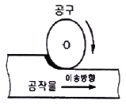
- 백래시를 제거해야 한다.
- 공구수명이 길다,
- 표면 거칠기가 나쁘다.
- 가공물 고정이 유리하다.
(정답률: 70%)
67. 어떤 115개의 데이터 각각에게 2진수로 번호를 붙이려고 한다. 몇 비트가 필요한가?
- 4
- 5
- 6
- 7
(정답률: 75%)
68. 다음 스테핑 모터에 대한 설명 중 옳지 않은 것은?
- 유니폴라 구동 방식은 여자 전류가 한 방향만인 방식이다. (+ 또는 0)
- 바이폴라 구동 방식은 유니폴라 구동 방식에 비하여 2배의 토크를 얻을 수 있다.
- 1분간 가해진 펄스수를 n, 스텝각(deg)을 θs 이라 하면 회전수(rpm) N = n x θs x 360 º이다
- 영구자석 스텝 모터의 경우 무여자 정지 때도 유지 토크를 갖는다.
(정답률: 61%)
69. 그림과 같은 공압적 표현은 어떤 논리를 표현하는가?
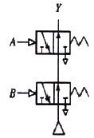
- NOT
- AND
- NOR
- NAND
(정답률: 44%)
70. 다음 그림과 같은 기호를 무엇이라 하는가?
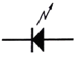
- 포토 다이오드
- 발광 다이오드
- 다링톤 트랜지스터
- 압전소자
(정답률: 75%)
71. 위치 검출기를 사용하지 않아도 모터 자체가 지령된 회전량만큼 회전 할 수 있는 모터는?
- 직류 서보모터
- 스텝 모터
- 교류 서보모터
- BLDC 모터
(정답률: 78%)
72. 정전용량을 크게 하는 방법은?
- 유전율을 작게 한다.
- 비유전율을 작게 한다.
- 금속판의 단면적을 크게 한다.
- 극판 간격을 크게 한다.
(정답률: 64%)
73. 다음 중 프로그램 카운터를 설명한 것으로 적당한 것은?
- CPU안에 정보가 저장되고, 처리될 장소를 제공한다.
- CPU의 상태를 제어한다.
- 프로그램에서 다음에 수행될 명령어의 주소를 기억 한다.
- 입출력 신호를 제어한다.
(정답률: 73%)
74. 변압기의 기본이 되는 동작원리는 무엇인가?
- 자기 인덕턴스
- 상호 캐피시턴스
- 코일사이의 공기
- 상호 인덕턴스
(정답률: 61%)
75. 어셈블리어에 관한 설명 중 맞는 것은?
- 기계어와 1 : 1로 대응시켜 기호화한 언어이다.
- 컴퓨터의 기종에 관계없이 명령어가 길다.
- 컴파일러에 의하여 기계어로 번역된다.
- 직접 컴퓨터가 처리 할 수 있는 언어이다.
(정답률: 64%)
76. 서브루틴 프로그램이 끝난 다음, 주 프로그램으로 되돌아 올 때, 주 프로그램의 어드레스를 저장하는 곳은?
- 데이터 레지스터
- 스택
- 프로그램 카운터
- 버퍼 레지스터
(정답률: 64%)
77. 다음 논리식의 성질 중 맞지 않는 것은?
- 1 + A = 1
- A ∙A = A
- A +
 = 1
= 1 - 0 ∙A = A
(정답률: 74%)
78. RLC 직렬회로에서 공진이 되기 위한 공급 전원의 주파수 f[Hz]는? (단, R[Ω], L[H], C[F] 이다.)
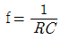
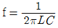
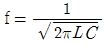
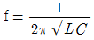
(정답률: 66%)
79. 직경 16mm인 고속도강 드릴을 사용하여 절삭속도 25m/min 으로 공작물에 구멍을 뚫을 때 드릴링머신의 스핀들 회전수는 몇 rpm이 적당한가?
- 300
- 400
- 500
- 600
(정답률: 69%)
80. 전기자 코일과 계자코일이 직렬로 연결되어 있으며, 기동토크가 가장 높으며, 무부하시 속도가 높고 코일에 공급되는 전류의 극을 바꾸더라도 모터의 회전방향은 변하지 않는 모터는?
- 복권형
- 분권형
- 직권형
- 타려형
(정답률: 72%)